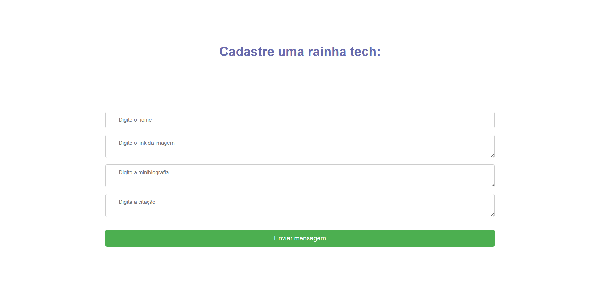
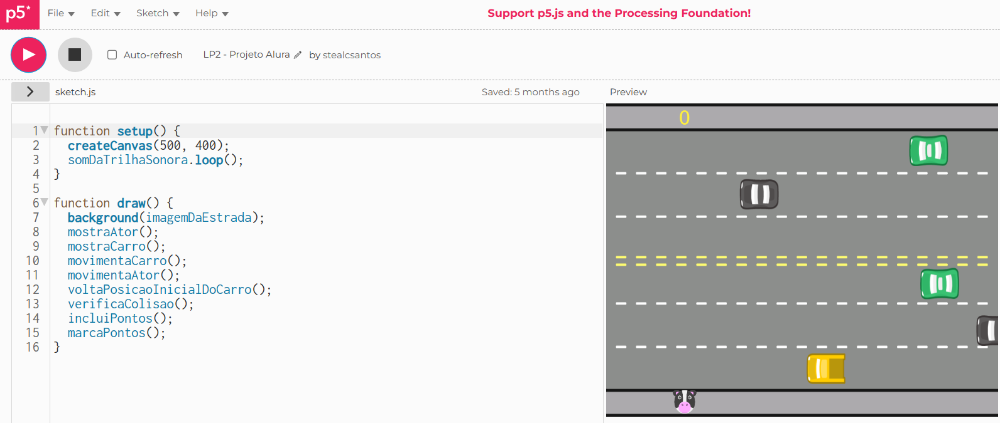
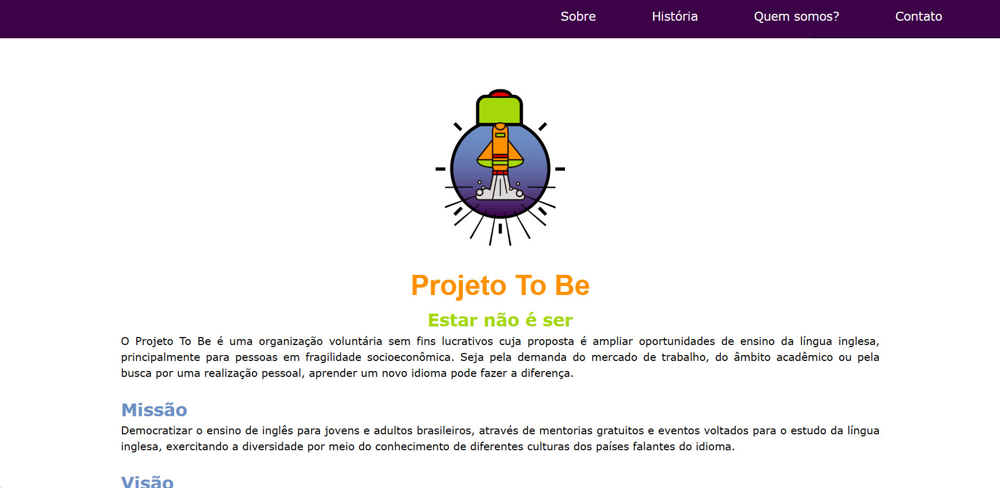

Olá, me chamo Stéphanie, tenho 20 anos, sou de Recife-PE. Atualmente, sou estudante de Sistemas de Informação na Universidade Federal Rural de Pernambuco. Sou apaixonada por tecnologia e tenho um compromisso constante com o aprendizado. Atualmente estou focada em aprimorar minhas habilidades em desenvolvimento web e aprofundar os estudos em segurança da informação e LGPD. Quer saber mais sobre a minha jornada? Desça mais um pouquinho nessa página.
Durante a minha jornada de aprendizagem, desenvolvi alguns projetos para praticar e fortificar as minhas habilidades e pensamenot lógico:
Implementação de uma API integrada a um website voltado para o cadastro de mulheres atuantes no setor tecnológico no Brasil. Para garantir uma gestão eficiente dos dados, foi utilizado o MongoDB como banco de dados principal e o Insomnia para testar as funcionalidades(CRUD) em ambiente de produção.
Este projeto surgiu durante meu aprendizado em JavaScript junto ao curso da Alura. Ao utilizar a biblioteca p5.js, busca-se combinar a jogabilidade tradicional com elementos de programação criativa. O resultado é um jogo que reflete a abordagem prática e exploratória da linguagem, com um entendimento lúdico da orientação a objetos.
Sendo um dos meus primeiros projetos, este website foi construído como uma experimentação. De 2020 a 2022 fundei e trabalhei como coordenadora de gestão de conteúdo no Projeto To Be, um projeto de ensino de inglês online e gratuito. No decorrer do projeto, surgiu a necessidade de criar algo facilmente compartilhável para reunir informações principais sobre o que era o projeto, e eu estava no inicio da minha aprendizagem de programação web, então para me desafiar e colaborar com o projeto, resolvi ttentar iniciar a criação de um website.
